别等身体亮红灯！百年春自体干细胞，为您定制细胞级抗衰防线
2026-03-04

About Us
关于百年春
肝硬化 - 沉默的隐匿杀手
说到肝硬化，很多年轻人都觉得离自己很远，凭着年轻想怎么“肝”就怎么“肝”，但实际上，年轻并不是肝硬化的“免罪金牌”。
据统计我国是全球肝硬化发病率、死亡率最高的国家。数据显示，我国肝硬化患者高达700万人，每年新增的肝癌患者高达46万人。
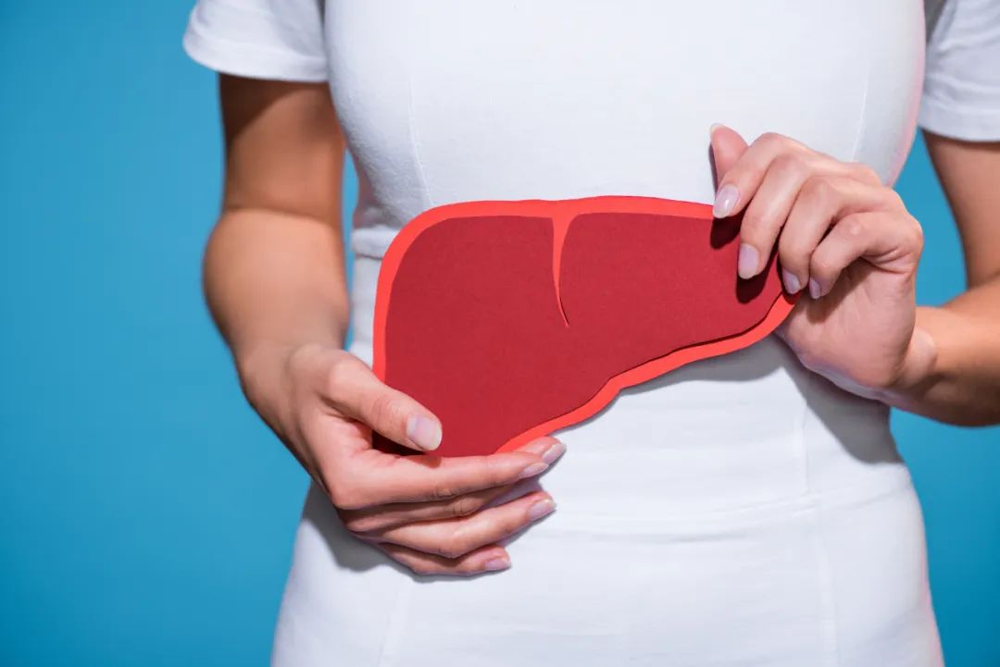
肝硬化(liver cirrhosis,LC)是一种常见的慢性肝病，是指因多种致病因素长期反复损害肝细胞，导致肝细胞变性、坏死、再生，出现多处“结痂”，丧失正常肝细胞功能的一种疾病。
导致肝硬化的病因有很多，我国大部分的肝硬化患者都是因为肝炎所导致的，其次是酒精毒性和脂肪肝。
表现为肝细胞变性坏死、纤维组织弥漫性增生、再生结节形成等，最终使肝脏逐渐变形、变硬。晚期常出现上消化道出血、继发感染、腹水、癌变等并发症。
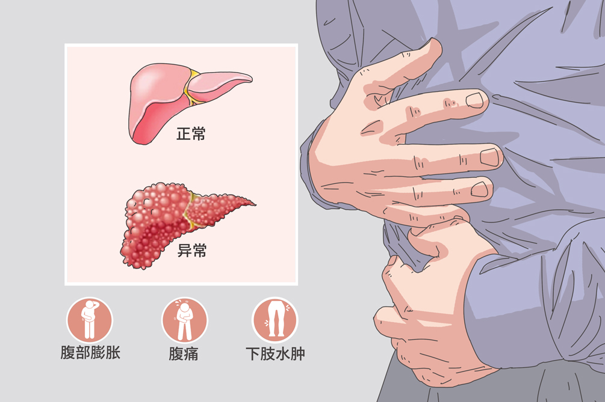
肝硬化是各种肝脏疾病的晚期阶段，近年其发病率和病死率逐渐升高。其主要因素包括肝炎病毒、酒精性肝炎、自身免疫性肝病等，这些因素均可导致正常肝细胞坏死和肝星状细胞活化，进而造成肝内细胞外基质过度沉积和肝脏结构破坏。
肝损伤的进展
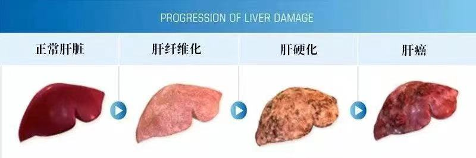
除肝移植外，目前仍缺乏有效的终末期肝硬化治疗方法，由于肝脏代偿功能强大，早期硬化时症状不明显，慢性肝病患者容易忽视，要记住多复查，早诊断，早治疗。因此在肝硬化早期阶段进行有效抗纤维化治疗显得尤为重要。
近年来，随着再生医学的发展，以干细胞移植为主的肝移植替代治疗已成为最具潜力的肝硬化治疗手段。由于干细胞在体内可通过分化为肝细胞、免疫调节、抗炎、抗纤维化、抗氧化应激和抗凋亡等途径促进肝损伤修复；因此，未来干细胞移植有望成为延长肝硬化患者生存率的有效方法。
2014年，我国中华医学会医学工程学分会干细胞工程学组发布了我国第1个干细胞移植规范化治疗失代偿期肝硬化的专家共识。2021年，华医学会医学工程学分会干细胞工程学组再次发布了《干细胞移植规范化治疗肝硬化失代偿的专家共识（2021）》。
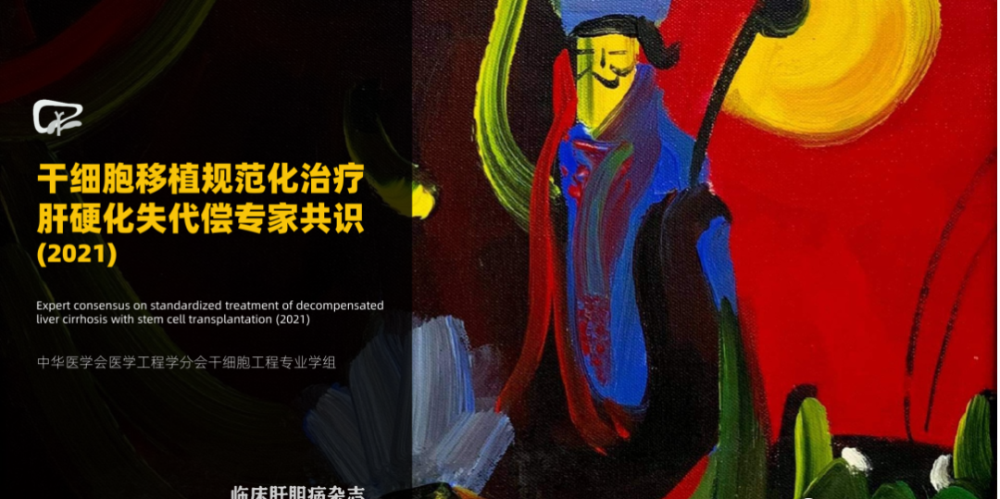
自体间充质干细胞治疗肝硬化正在成为一种损伤小、并发症少、疗效明显的治疗手段。以下就干细胞的生物学特性及其在治疗肝硬化方面的作用进行综述。
自体间充质干细胞-再生医学领域的新宠
间充质干细胞（MSC）是一种多功能干细胞，它们具有自我更新能力，可以分化为多种细胞类型，如骨细胞、软骨细胞和脂肪细胞等，并
在组织修复和再生医学中显示出巨大的治疗潜力。
自体间充质干细胞作用原理
1.旁分泌作用
分泌不同水平的细胞因子相互影响，表现出抗炎症反应的作用，并激活肝脏内的肝干细胞，促进肝细胞再生；
2.降解细胞外基质
通过高表达基质金属蛋白酶，直接降解肝内过量沉积的细胞外基质，减轻肝纤维化；
3.直接分化
在肝脏损伤微环境的影响下定植、增殖，并分化成为肝细胞发挥作用；
4.细胞融合
直接与肝细胞融合，进而启动细胞的增殖过程；
自体间充质干细胞治疗方式
自体间充质干细胞治疗途径的选择可能会直接影响到移植细胞在肝脏的定植量，进而影响治疗效果，临床上细胞的移植途径主要包括介入方法行肝动脉输注、门静脉输注、直接注入肝内、外周静脉输注、腹膜腔输注等。
自体间充质干细胞治疗案例
历经20天，肝硬化、糖尿病患者在回输1次自体间充质干细胞后，数据降50%！血糖从13.46到9.6，各项数据皆有好转，并且4个月未愈合的伤口在回输10天后愈合，并且未留下伤疤痕迹。
糖尿病数值前后对比：
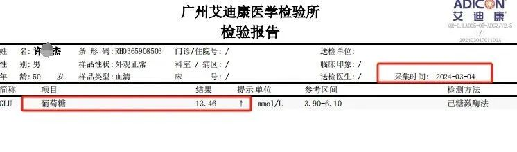
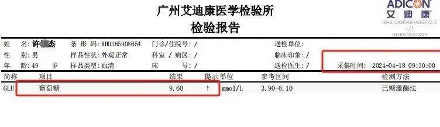
肝功能数值前后对比：
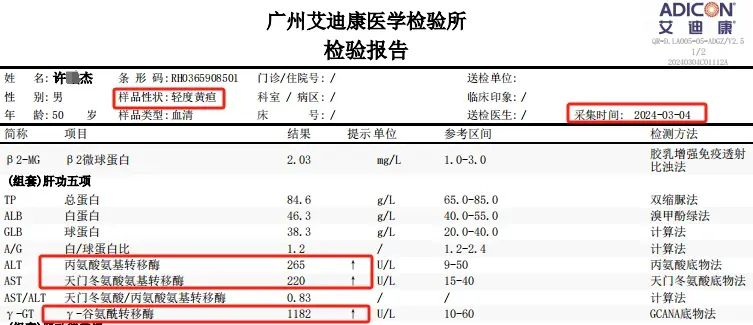
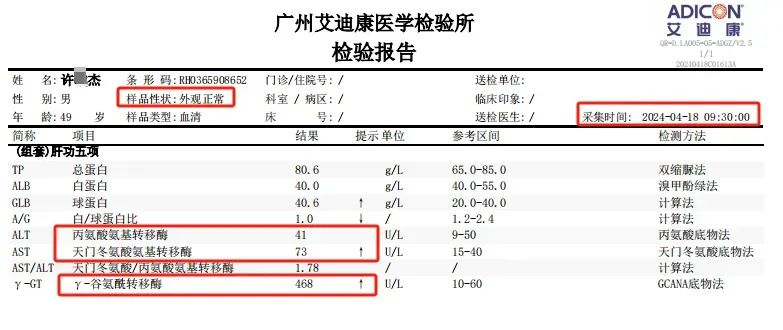
铁蛋白、癌胚抗原、甲胎蛋白数值前后对比：
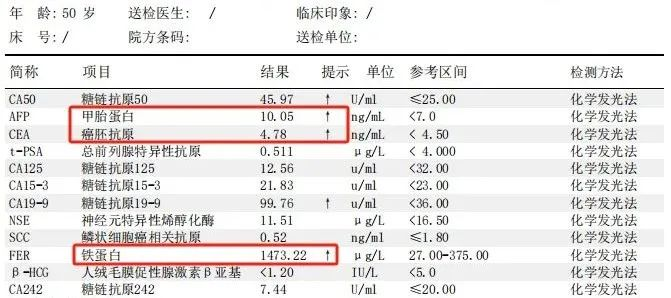
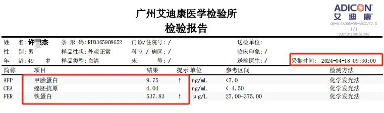
自体间充质干细胞来源
百年春自体干细胞拥有世界前沿技术：抽取外周血80-100ml，提取里面的白细胞用小分子逆转诱导成自体间充质干细胞。
取材来源自身，无排异且安全性高，作用时效长，也无道德伦理争议；
一次性可逆转的细胞数亿、干细胞数量多，分泌细胞生长因子总量高，治疗效果强；
一代逆转技术，非传统扩增技术，细胞活性强；
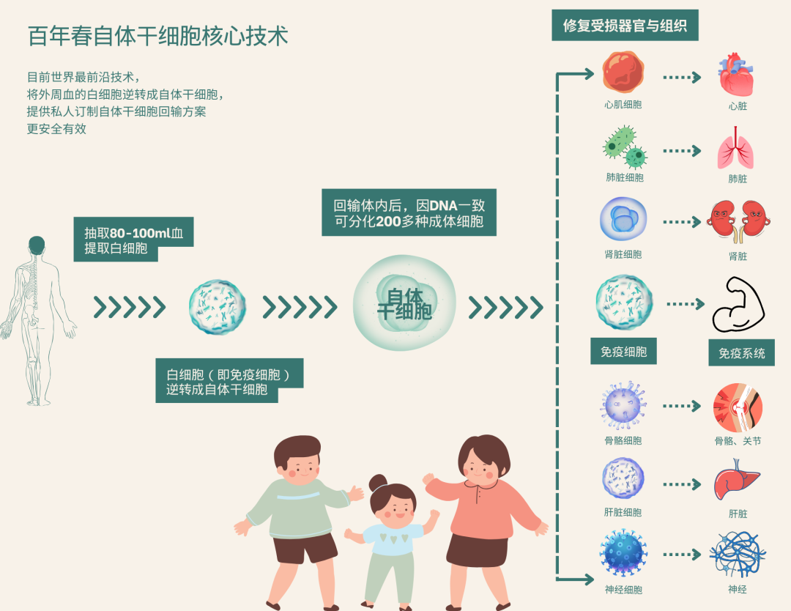
综上述案例所示，自体间充质干细胞安全性高，并且在修复、再生损伤的肝细胞中起着良好的治疗作用，且接受治疗的肝硬化患者的临床表现及一般情况好转，肝功能稳步改善，门静脉压力逐渐降低，生存率得到提高。
其治疗肝纤维化、肝硬化的疗效是肯定的！